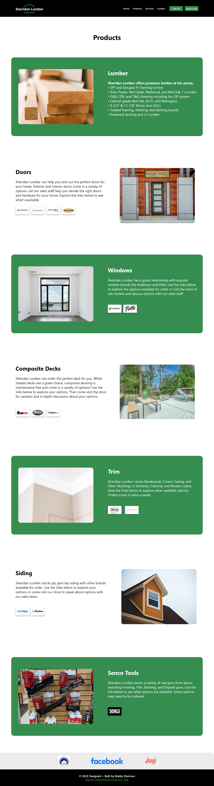

Sheridan Lumber | Responsive Website
Sheridan Lumber's original website provided only basic information about the company. It was poorly designed and lacked usable information. The remedy includes a modern minimalist layout (flexbox), improved organization of content and pages, and a more conventional header. On top of the redesign, a new logo was created to provide a more professional look. The design progressed throughout the build stage leaving the wireframes and mockups as a path to the final solution.
Wireframes
Tablet
Mobile
Mockups
Desktop
